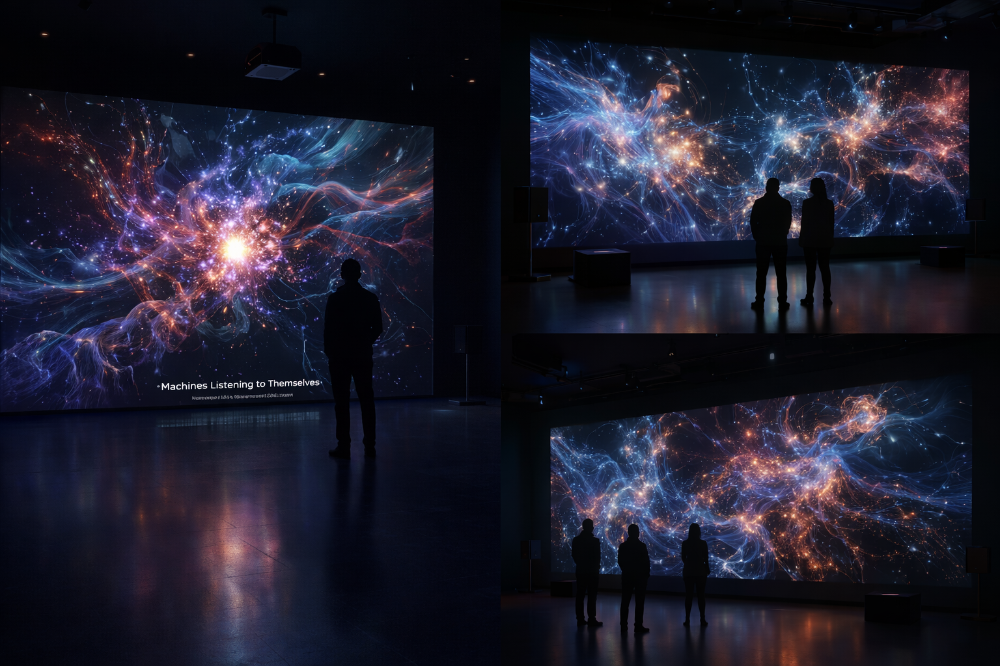
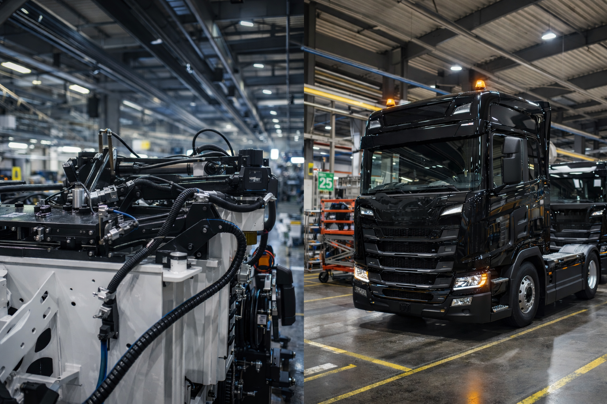
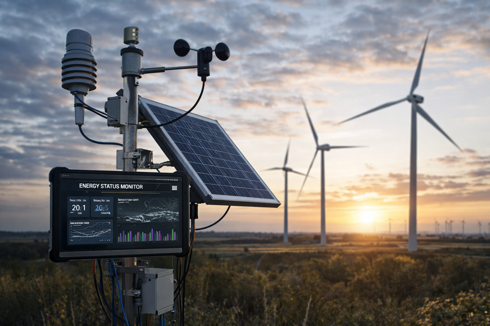

Exhibition render
A speculative installation view for curatorial presentation and spatial imagination.
A large-scale audiovisual field where industrial signals become luminous structures, sonic matter, and machine memory. Inspired by data atmospheres, granular abstraction, and architectural composition, the work stages the factory as an organism that senses itself through vibration, rhythm, and energy.
Machines Listening to Themselves is a distributed audiovisual installation that transforms industrial assembly processes into a self-organizing sonic ecosystem. Instead of treating machines as passive tools of human production, the work frames them as sensing agents capable of perceiving and expressing their own operational states.
The project is based on field recordings and operational data captured within a truck manufacturing environment. Vibrations, airflow, torque, electrical activity, and assembly rhythms are collected through microphones and contact-based industrial sensors.
These signals are analyzed through custom software and AI-assisted pattern recognition, then translated into evolving sound synthesis and generative visual structures. The system reacts both to machine behavior and to remote environmental data streams.
Field recordings and industrial sensing interfaces gather acoustic, vibrational, and rhythmic signatures from machinery and assembly processes.
Custom JavaScript systems, Python-based data analysis, and AI-assisted anomaly detection identify latent structures, stress cycles, and temporal patterns.
Sound synthesis, generative motion, and data-driven image behavior reorganize the industrial signal into an emergent audiovisual organism.
Large-scale projection environment, multi-channel sound system, real-time generative visual engine, industrial field recordings, sensor-derived data, and a web-based architecture capable of distributed response.

Exhibition render
A speculative installation view for curatorial presentation and spatial imagination.

Industrial source material
Mechanical systems and architectural conditions from the manufacturing context.

Environmental energy input
Wind energy, sensing devices, and remote status capture as part of the project’s broader energetic ecology.
Credits
Concept, sound design, data sonification, distributed system architecture, software development:
Nehemias Isai Alvarado Juarez
Developed independently. Field material recorded within sustainability-oriented industrial environments.
Keywords
sound art, industrial sonification, distributed systems, machine agency, post-anthropocentric interaction, sustainability, networked installation, AI-assisted analysis, non-human communication
Artist Biography
Nehemias Isai Alvarado Juarez is a composer, sound artist, and creative technologist working at the intersection of experimental music, data-driven systems, and industrial environments. His practice explores listening as a critical and political act, focusing on how sound can reveal hidden structures within technological, social, and ecological systems.
Currently based in Ireland, he combines artistic practice with experience in engineering and sustainability-oriented manufacturing contexts, approaching technology both as artistic medium and lived operational reality.